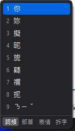
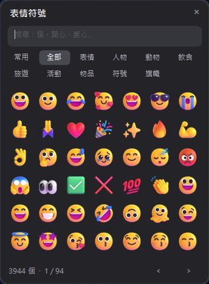
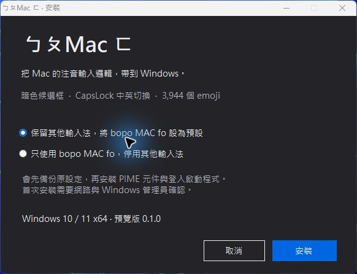

在字後，
往下選字。
游標在中文字後按 ↓ 叫出候選字。精簡暗色框保留詞頻、部首、表情與拆字分頁；注音與聲調選項排在漢字之後。
把 Mac 的注音輸入邏輯，
帶到 Windows。
長期在 Mac 與 PC 之間切換，打字也不該一直重新適應。ㄅㄆMac ㄈ保留熟悉的字後選字方向與中英切換節奏，搭配小巧的暗色候選框和可放在旁邊點選的表情面板。
Mac-style Bopomofo typing for Windows. An open-source MAKOTO LAB project, built on McBopomofoWeb and PIME.
0.1.0-preview.1 · Windows 10／11 x64 · 免費開源 · 更新於 2026-10-30
游標在中文字後按 ↓ 叫出候選字。精簡暗色框保留詞頻、部首、表情與拆字分頁；注音與聲調選項排在漢字之後。
短按 CapsLock 切換中英文；按住約 500 毫秒，達門檻時立即切換大小寫鎖定，不必等放開。Shift 使用鍵盤上方符號。
Ctrl + Alt + E 開關浮動面板。3,944 項表情可搜尋、分類、換頁；插入時保留原本的文字，接著繼續打字。



bopo-mac-fo-0.1.0-windows-x64.zip。Setup.exe；選保留其他輸入法或只使用本輸入法。安裝包附 Node 與圖片；缺少 PIME 時會下載並驗證官方前置元件。首次安裝需網路與同一 Windows 帳號的管理員確認。此預覽版沿用 PIME 小麥識別，會更新既有 PIME 服務與小麥設定；安裝前會備份，可依教學回復。ARM64 尚未支援，完整全新系統測試仍在進行。
把 Mac 的注音輸入邏輯帶到 Windows，減少長期在 Mac 與 PC 之間切換時，因選字方向與中英切換習慣不同而產生的不適應。
不是。這是 MAKOTO LAB 以 McBopomofoWeb、PIME 與 libIME2 整合的社群專案，操作參考 Mac，但不是 Apple 的輸入引擎，選字排序也不保證與 macOS 完全相同。
游標在中文字後方按向下方向鍵選字。短按 CapsLock 切換中英，按住約 500 毫秒時立即切換大寫鎖定；Shift＋符號鍵使用鍵盤上方符號。
可以。按 Enter 保留未完成的注音；選字時也能從漢字候選後方選擇帶聲調的注音，把目前詞彙換回注音。
按 Ctrl + Alt + E 開關浮動面板，可用中英文搜尋、按分類瀏覽、點選插入。共 3,944 項，包含膚色及組合序列；其中 2,840 項有 Fluent 彩色圖片。插入後的圖案與顏色由各程式或裝置決定。
目前提供 Windows 10／11 x64 預覽版，支援這些系統中的 x64 與 x86 應用程式。Windows ARM64 尚未支援，全新系統與所有軟體的相容性還需要更多測試。
免費且提供原始碼。新增整合碼採 GPL-2.0，上游元件保留各自授權。安裝預設保留其他輸入法；只有選擇「只使用」時才停用微軟注音、新酷音並整理切換清單。
核心引擎來自 McBopomofoWeb；Windows 服務來自 PIME／libIME2，後端使用 NIME。部首、注音與表情序列使用 Unicode／CLDR，拆字資料來自 CJKVI／CHISE，彩色表情預覽採 Microsoft Fluent Emoji。
新增整合碼採 GPL-2.0，上游元件與資料保留原授權。這是 MAKOTO LAB 維護的社群專案，並非 Apple、Microsoft 或上游團隊的官方產品；不包含 Apple 字型與圖像。